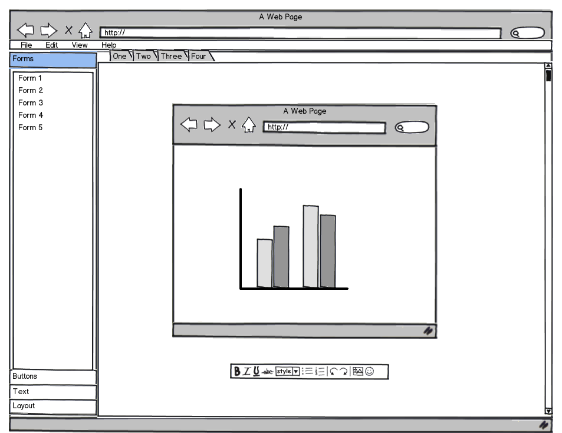

Features
Sketch

Features
-
Formatting Toolbar
-
Multiple tabs for developing separate pages at the same time
-
Save as PDF or image
-
Forms, buttons, text, containers, navigation bars, tables, etc.
-
Clear entire canvas easily
-
Intuitive Interface
-
Templates are editable for more customization, and for users who have a more set vision of what they would like their site to look like
-
Templates with default colors/fonts for ones who want to very quickly build a prototype of their site
-
Create themes where users have more flexibility with what colors/font they want, but not so detailed so that they implement every detail of the site (more choice with less time)
-
Upload images to use in design
-
Frequently used buttons on pop-up window menu tool bar